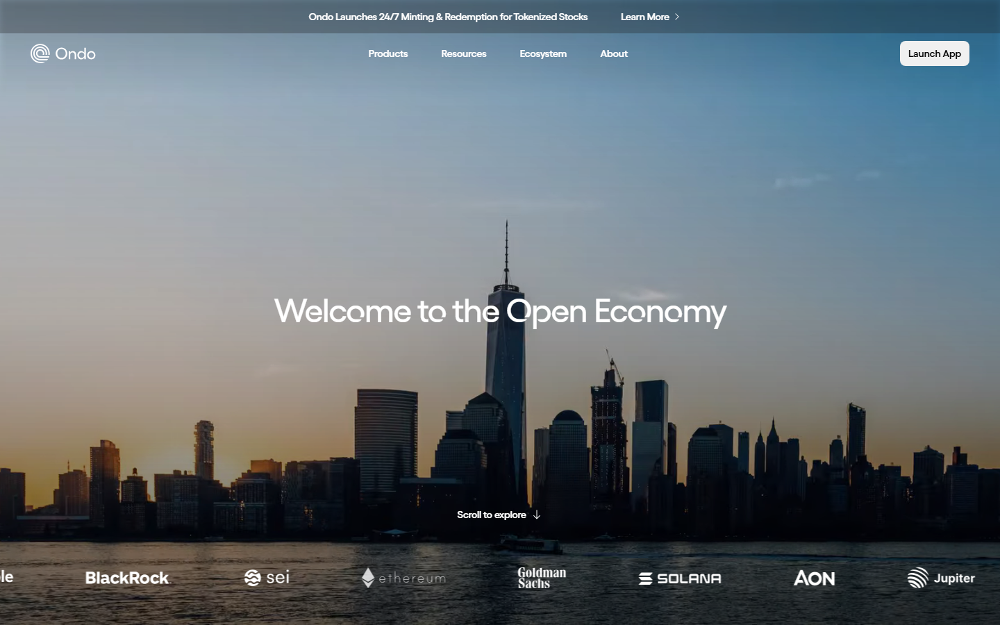
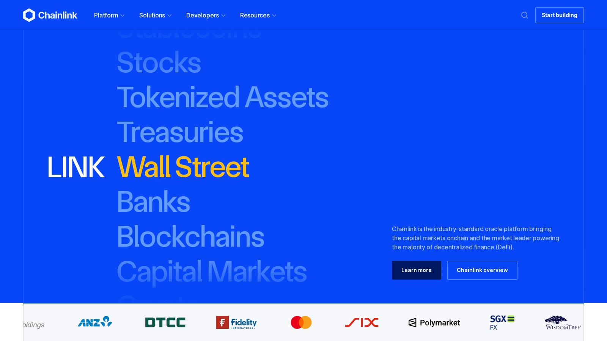
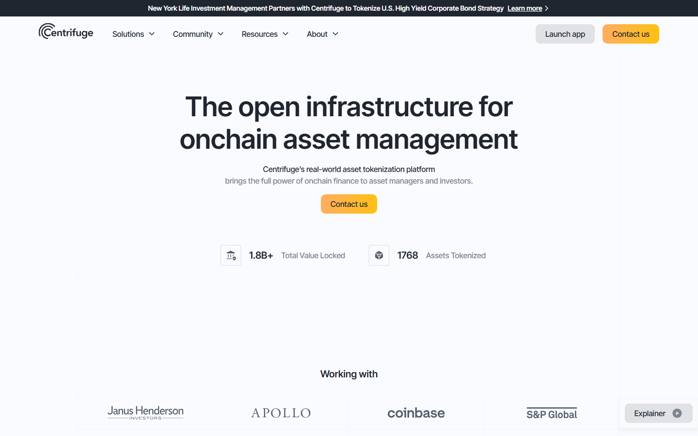
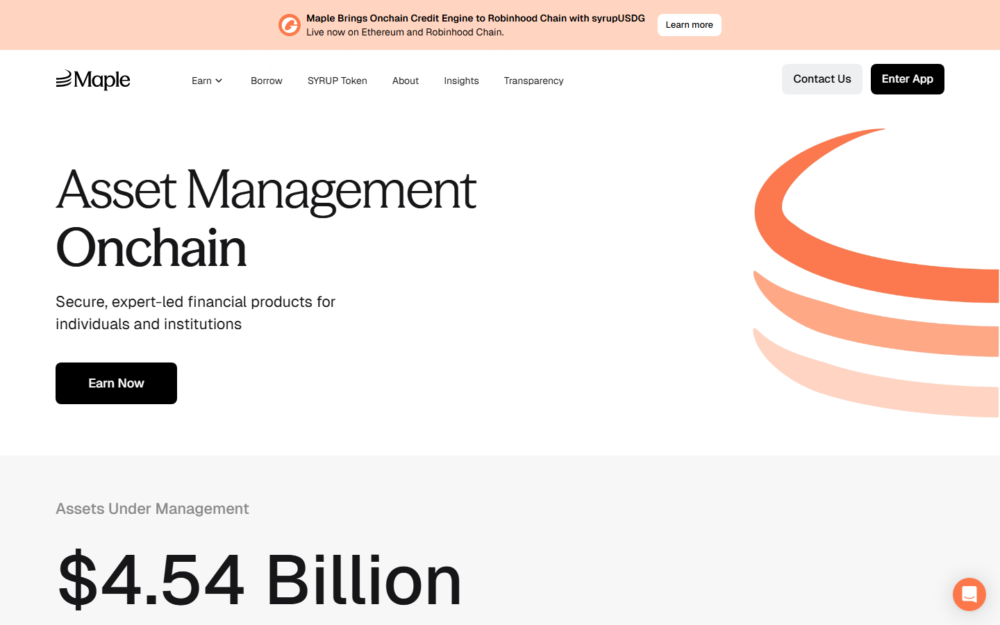
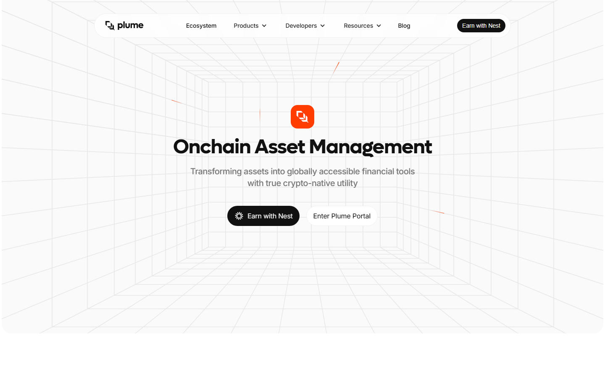
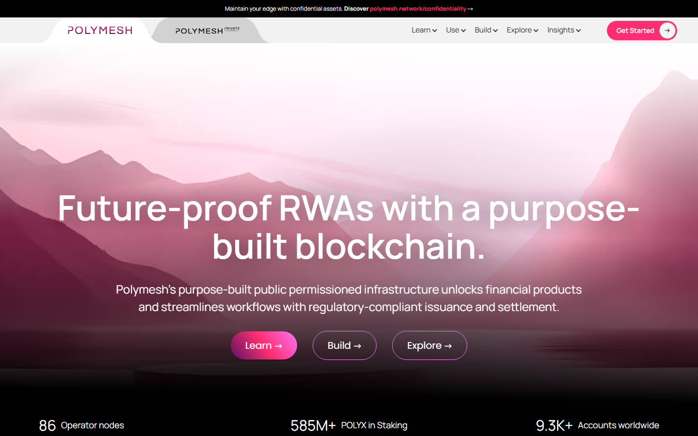

The top RWA crypto projects in 2026 are Ondo Finance, Chainlink, Sky Money (formerly Maker), Centrifuge, Maple Finance, Plume Network, TokenFi, Pendle, Polymesh, and Hashnote.
Ondo is the easiest entry point for beginners: Treasury-backed yield on blockchain rails, with the clearest product story in the category. Chainlink provides the infrastructure layer that most RWA projects depend on for reserve verification and cross-chain messaging. Sky Money has the most battle-tested real-world collateral model in DeFi, having backed its stablecoin with offchain assets for years. The remaining seven projects cover credit markets, yield trading, infrastructure, and institutional cash management.
If you are following the real-world asset trend, the first thing to understand is that RWA is not one neat coin sector. It is a stack. One project tokenizes Treasuries. Another verifies reserves. Another builds the rules and connection layer around those assets. Another turns that yield into a DeFi product normal users can actually hold. That is why beginner RWA lists often feel shallow: they mix treasury tokens, oracle tools, credit markets, and launch infrastructure as if they all do the same job.
That is why this guide separates those roles instead of throwing every RWA coin into one basket. It compares ten projects based on product maturity, practical use, and how easy it is to understand what the token is actually doing.
| Rank | Project | What it does | Score | One-line note | Main watchout |
|---|---|---|---|---|---|
| 1 | Ondo Finance | Tokenized Treasury access | 5/5 | Clearest product story and most beginner-legible RWA | Access restrictions and KYC |
| 2 | Chainlink | Verifies reserves and moves data between chains | 4.5/5 | Infrastructure layer under most serious RWA projects | Does not give direct Treasury exposure |
| 3 | Maker / Sky | Stablecoin system backed partly by real-world assets | 4.5/5 | Most battle-tested DeFi protocol with real-world collateral | Brand transition still confuses newcomers |
| 4 | Centrifuge | Credit pools backed by real business assets | 4/5 | Deepest private-credit RWA exposure outside institutions | Borrower default risk is real |
| 5 | Maple Finance | Lending markets for bigger borrowers | 3.5/5 | Institutional credit on-chain; strong when screened well | Less beginner-friendly |
| 6 | Plume Network | Blockchain built for tokenized asset apps | 3/5 | Infrastructure bet on RWA-native chain design | Early ecosystem risk |
| 7 | TokenFi | Retail-friendly tokenization tooling | 2.5/5 | No-code tokenization angle; adoption still early | Narrative can outrun product depth |
| 8 | Pendle | Yield trading for tokenized yield assets | 2.5/5 | Useful for yield-curve traders; too abstract for most beginners | Too complex for most beginners |
| 9 | Polymesh | Regulated securities blockchain | 2/5 | Most compliance-native chain; highly specialized | Specialized, permissioned design |
| 10 | Hashnote | Institutional blockchain-based cash management | 2/5 | Relevant for tracking institutional RWA direction | Limited retail accessibility |
Most beginners hear “RWA” and think every project is the same. That is the first mistake.
Think of this category like a shopping mall. One store sells the product. Another store verifies it is real. Another store built the building.
We ranked these projects using five questions:
That last point matters most. RWA sounds safer than meme-coin speculation, but “backed by real assets” does not remove smart contract risk, legal risk, or liquidity risk.
Ondo Finance is the cleanest beginner entry point into RWA because the story is easy to explain: it wraps short-term US Treasury exposure into tokens people can hold in a crypto wallet.
Its best-known product is USDY, which is designed to pass through Treasury-style yield instead of just sitting flat like a normal dollar stablecoin such as the ones covered in our stablecoin guide.
That makes Ondo useful for users who want dollar stability plus yield, but it also makes the access rules impossible to ignore. A recurring theme in this r/defi discussion about what DeFi users still want from the market is that access still feels more like regulated finance than open DeFi (crypto apps that run without a normal broker).
In that same thread, a user from the Caribbean complained that USDY geo-blocks and KYC hoops made it harder to access than meme coins. Another commenter in r/CryptoCurrency’s discussion of the new generation of stablecoins made the same point more neutrally, describing USDY as appealing precisely because Treasury yield is real, but still noting the jurisdiction and onboarding limits.
“USDY is appealing because the Treasury yield is real, not synthetic. But the geo-blocks and KYC requirements make it feel more like TradFi than open DeFi for anyone outside a handful of approved countries.”
That tension is why Ondo ranks first here. It has one of the clearest products in the category, but it also shows how fast RWA stops feeling open to everyone.
Featured Image
File: ../media/03-ondo-home-2026-07-16.png
Alt text: Ondo Finance homepage showing tokenized Treasury yield products and access-focused onboarding for crypto users
Caption: Ondo Finance homepage captured during our July 2026 review of RWA crypto projects. The product story is easy to follow, but the access rules are part of the pitch.

Ondo Finance homepage, July 2026. The product story is unusually clear: bring Treasury-style yield onto blockchain rails, then wrap it in a polished institutional surface.
Best for: Users who want the simplest Treasury-backed RWA concept. Not ideal for: Anyone expecting open access without identity checks or region limits.
Chainlink is on this list for infrastructure, not because it issues Treasury tokens itself.
If tokenized bonds, funds, or stablecoins are going to matter, someone has to verify reserves that sit outside the blockchain and move trusted data between chains. That is the layer where Chainlink keeps showing up through Proof of Reserve and CCIP.
Reddit discussion around Chainlink’s RWA role is usually less about using a product and more about why the rails matter. In one recent r/defi thread about which RWA projects are really bridging TradFi and DeFi, a commenter argued that regardless of who tokenizes the assets, they all end up needing Chainlink for verification.
That is the trade-off. Chainlink gives you picks-and-shovels exposure to the theme, not direct exposure to one Treasury or credit product.
Screenshot 2
File: ../media/03-chainlink-home-2026-07-13.png
Alt text: Chainlink homepage showing Proof of Reserve, CCIP, and infrastructure for tokenized real-world assets
Caption: Chainlink homepage captured during our July 2026 review of RWA crypto projects. The page makes clear that Chainlink is the checking and messaging layer, not the asset issuer.

Chainlink homepage, July 2026. The RWA case here is not about a single tokenized fund. It is about the verification and messaging layer under many of them.
Best for: Investors who want infrastructure exposure across the RWA stack. Not ideal for: Users looking for direct Treasury or credit yield.
Sky Money, formerly Maker, matters because it proved a large DeFi protocol could lean heavily on real-world collateral instead of pretending all yield had to come from pure crypto demand.
Its stablecoin system has spent years integrating Treasury exposure through vault structures and external managers. That makes the protocol one of the most battle-tested bridges between DeFi and offchain debt markets.
Public user discussion around Maker’s RWA side is less emotional than Ondo’s because most users touch the stablecoin first and the collateral strategy second. In one MakerDAO thread asking where the treasury comes from, commenters framed the RWA arm as evidence that big capital still sees Maker’s debt-backed stablecoin model as one of the strongest in crypto. Another comment in r/defi’s RWA bridge discussion described Maker as the biggest protocol in the sector by a wide margin.
“Maker is the biggest by a wide margin. It has been using real-world assets as collateral for years and the model has held up. The Sky rebrand is confusing but the protocol underneath it is still the most proven thing in the RWA space.”
The beginner problem is branding. If you arrive fresh, the Maker-to-Sky transition adds one more layer to an already technical system.
Best for: Users who want RWA exposure through a proven DeFi system that uses real-world assets behind the stablecoin. Not ideal for: Beginners who want a single-purpose product with one easy message.
Centrifuge is where the RWA story shifts from government debt into private credit.
Instead of packaging Treasuries, it tokenizes assets like invoices, trade receivables, and other borrower-backed pools so DeFi capital can fund real businesses on blockchain rails.
That makes the yield story more interesting, but also more fragile. In an older r/defi thread about high-yield staking projects, one user said they liked Centrifuge because of the mission and the partnership overlap with Maker and Aave, while still noting that some pools were limited to larger or approved investors. That is a useful signal because it shows both the appeal and the gatekeeping.
The token side matters too. Centrifuge has long used loan-related fee flows and CFG incentives to coordinate the network, which gives the coin a role beyond simple speculation.
Screenshot 3
File: ../media/03-centrifuge-home-2026-07-16.png
Alt text: Centrifuge homepage showing tokenized credit pools, business financing, and CFG token ecosystem
Caption: Centrifuge homepage captured during our July 2026 review of RWA crypto projects. The page shows this is a credit-market play, not another Treasury wrapper.

Centrifuge homepage, July 2026. This is one of the clearest examples of real credit markets being rebuilt on blockchain rails instead of just wrapping a Treasury fund.
Best for: Users who want exposure to private credit rather than only government debt. Not ideal for: Beginners who are not comfortable evaluating borrower and default risk.
Maple Finance sits close to Centrifuge in theme, but the feel is different. It is a cleaner lending market for larger borrowers, not a retail-first product.
The platform is built around managed lending pools, structured credit, and counterparties that already look more like professional firms than crypto hobbyists.
That professional focus is exactly why Maple can be useful in an RWA portfolio. It gives you exposure to a part of crypto lending that is trying to look disciplined and credit-aware instead of hype-driven.
The risk is obvious in public discussion. Reddit coverage of Maple Finance’s $54 million sour-debt episode became a reminder that institutional branding does not erase lender risk. When unsecured or lightly protected lending goes wrong, the losses are very real.
Screenshot 4
File: ../media/03-maple-home-2026-07-16.png
Alt text: Maple Finance homepage showing institutional lending pools, managed credit products, and blockchain-based borrowing markets
Caption: Maple Finance homepage captured during our July 2026 review of RWA crypto projects. The interface feels closer to a credit desk than a beginner DeFi app.

Maple Finance page, July 2026. The interface feels more like a professional credit portal than a retail DeFi dashboard, which is both the attraction and the barrier.
Best for: Users who want exposure to institutional-style credit running on blockchain rails. Not ideal for: Casual retail users expecting simple deposit-and-earn flows.
Plume Network is not the most proven project on this list, but it is one of the clearest bets on where the sector is going.
Most blockchains are general-purpose and tell RWA teams to bolt compliance and custody on later. Plume is trying to make those features native so builders can launch tokenized assets without stitching together the whole stack themselves.
That is why the project gets attention from people who care more about the future plumbing of RWA than buying one specific yield token today.
The flip side is maturity. Plume is still earlier than Ondo, Maker, or Chainlink in terms of real usage, so the upside case depends on ecosystem execution rather than already-dominant live assets.
Screenshot 5
File: ../media/03-plume-home-2026-07-16.png
Alt text: Plume Network homepage showing blockchain infrastructure for tokenized asset launches, compliance rails, and RWA builders
Caption: Plume Network homepage captured during our July 2026 review of RWA crypto projects. The pitch is about making tokenized-asset launches easier for builders from the start.

Plume Network page, July 2026. The pitch is infrastructure first: if RWA grows, builders may want a chain that was designed around compliance from day one.
Best for: Developers and investors who want an early infrastructure bet. Not ideal for: Users who want mature, already-scaled RWA cash flows today.
TokenFi aims at the retail edge of tokenization.
Where Ondo and Maple feel more corporate, TokenFi sells the idea that launching or tokenizing an asset should eventually become a simpler product workflow instead of a custom legal-and-engineering project.
That is attractive because tokenization only scales if the tooling becomes easier. But the narrative can run ahead of reality here. Public Reddit chatter is still more about potential and ecosystem growth than many concrete end-user case studies.
For that reason, TokenFi belongs lower in the ranking. The concept is important, and the no-code angle is useful, but it is still easier to picture the pitch than to find deep proof of broad adoption.
Best for: Users who want exposure to the tokenization-tooling narrative. Not ideal for: Investors who want the strongest evidence of live institutional traction.
Pendle is not an RWA issuer, but it becomes relevant the moment tokenized Treasury yield starts behaving like something traders want to split, price, and hedge.
Its core idea is powerful: separate the principal from the yield so users can lock rates, speculate on future yield, or reshape exposure from assets like tokenized Treasuries.
Reddit discussion around Pendle usually comes from DeFi users who already think in yield curves, not beginners. That alone is a warning. If the base RWA product already feels technical, Pendle adds another layer on top.
Still, it deserves a place here because yield-bearing RWA tokens become much more interesting once a protocol can turn them into tradable rate instruments.
Best for: Advanced DeFi users who understand yield trading. Not ideal for: Beginners who just want to hold a Treasury-backed asset and collect yield.
Polymesh is the most regulation-first chain on this list.
It was built specifically for regulated securities, which means identity checks, access controls, and compliance are not awkward add-ons. They are part of the design.
That makes it different from almost every DeFi-native project. In a PolymathNetwork thread on POLY and POLYX, users repeatedly explain the project by stressing that security tokens mean actual ownership claims, not just another utility coin. Other commenters in the broader PolymathNetwork community describe Polymesh as a hidden infrastructure play precisely because it is trying to solve the back-end compliance burden directly.
The limitation is also the selling point: this is specialized infrastructure. If you prefer open crypto apps, Polymesh will feel restrictive on purpose.
Screenshot 6
File: ../media/03-polymesh-home-2026-07-16.png
Alt text: Polymesh homepage showing regulated security token infrastructure, identity-based access, and POLYX network design
Caption: Polymesh homepage captured during our July 2026 review of RWA crypto projects. The page makes clear that compliance and identity checks are core product choices here.

Polymesh homepage, July 2026. The chain is designed for compliant securities issuance, so the restricted-access structure is not an accident. It is the core product choice.
Best for: Institutions and investors focused on compliant securities tokenization. Not ideal for: Users who prioritize censorship resistance and open participation.
Hashnote represents the institutional cash-management end of the category.
Its role is less about retail speculation and more about putting short-term cash into blockchain-based structures that still look acceptable to funds, treasuries, and professional allocators.
That is why public user commentary is thinner here than for Ondo or Pendle. Most open discussion is around market structure and acquisitions rather than small investors describing daily use.
Even so, Hashnote belongs on the list because the RWA sector is not only about coins retail traders can chase. A large part of the category is quietly about where bigger firms park cash once blockchain settlement starts to look normal.
Best for: Users tracking the institutional cash-management side of RWA. Not ideal for: Retail users who want open access and active community participation.
RWA projects often look safer than the rest of crypto because the underlying story involves bonds, invoices, or regulated securities instead of pure hype.
That can still create false comfort.
If you buy Ondo, your risk is not just “Treasuries are safe.” It is also smart contracts, issuer structure, access restrictions, and liquidity conditions.
If you buy Centrifuge or Maple exposure, your risk moves toward borrower quality and how carefully lenders screen those borrowers.
If you buy Chainlink, Plume, or Polymesh, you are making more of an infrastructure bet than a direct asset-yield bet.
The sector makes more sense once you stop asking “Which RWA coin wins?” and start asking “Which part of this stack am I actually buying?”
If you want the easiest product story, start with Ondo.
If you want infrastructure exposure instead of one issuer, look at Chainlink.
If you want battle-tested DeFi with major real-world collateral underneath, Sky/Maker is still one of the most important names in the space.
If you want credit-market exposure, compare Centrifuge and Maple carefully, because the yield is different and so is the risk.
Why you can trust this guide Based on live protocol documentation and public product pages reviewed July 2026. We directly loaded the public interfaces of Ondo, Chainlink, Centrifuge, Maple, Polymesh, and Plume, then cross-checked public Reddit discussions to see how real users describe access, yield, and risk. Anything that depends on a full sign-up, a funded transaction, or restricted investor access still needs deeper verification before publication.
Plain-language summary If you are new to RWA, start with Ondo because the product is easiest to understand. Think of RWA like putting a normal financial product, such as a Treasury bill or a loan, into a token you can hold in a crypto wallet. Do not buy an RWA coin just because it sounds safer than the rest of crypto. First check whether it gives you direct asset exposure, support infrastructure, or only a narrative.
We directly checked public product pages, docs, and visible product positioning for the projects on this list.
We did not buy every token or complete every onboarding flow with real funds. That is why this article focuses on what each project clearly does, what users say about using it, and where the biggest beginner risks still sit.
What stood out immediately was not the token list. It was how quickly the category splits into different jobs. Some projects give you the asset itself. Others only provide the rails, checks, or legal structure around it. That makes this sector more useful than it first looks, but also easier to misunderstand.
The screenshots below show the projects where the public surface tells you the most right away. For the entries without screenshots, this ranking leans more on docs, product role, and repeated community descriptions than on a useful public walkthrough.
A note on scale: the RWA tokenization market crossed $10 billion in total value locked in 2024 according to DeFiLlama’s RWA tracking, with US Treasury-backed products driving the majority of that growth. That figure matters because it shows the category is no longer theoretical. Real capital has moved into these protocols, which also makes verification and trust model more important than ever.
It is a crypto project that helps bring real-world assets like Treasuries, credit, real estate, or securities onto blockchain rails, either by issuing them, verifying them, or building the infrastructure around them.
It is one of the easiest to understand because the product is straightforward: Treasury-backed yield on blockchain rails. The main drawback is access restrictions.
Because tokenized assets still need trusted reserve verification and cross-chain messaging. Chainlink sits underneath many of those workflows.
Not automatically. The underlying assets may be safer, but the legal wrappers, issuers, liquidity, and smart contracts still create risk.
Centrifuge is more associated with tokenized credit pools and asset-backed borrowing structures, while Maple feels more like a managed institutional lending marketplace.